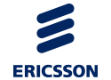
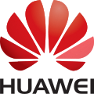
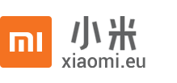
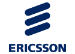
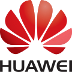
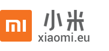

|  | |||
|  | |||
 |
 |
||
|  |
|  | |||
|  | |||
|
|
||
|  |
AlcatelПроизносится Алкатэль — ранее французская компания, один из лидеров мирового рынка телекоммуникационного оборудования. Штаб-квартира находилась в Париже. |
AppleАмериканская корпорация, производитель персональных и планшетных компьютеров, аудиоплееров, телефонов, программного обеспечения. Один из пионеров в области персональных компьютеров и современных многозадачных операционных систем с графическим интерфейсом. Штаб-квартира — в Купертино, штат Калифорния. |
EricssonШведская компания, производитель телекоммуникационного оборудования. Штаб-квартира — в Стокгольме. |
ExplayТорговая марка ЗАО «Эксплей», российского OEM-поставщика цифровых устройств. Дата основания компании — 2005 год, торговая марка зарегистрирована в 2007 году. Основное направление деятельности — продажа и гарантийное обслуживание электронных устройств. Под брендом Explay выпускается линейка различных электронных устройств, имеющих собственные имена (номера), по следующим группам: GPS-навигаторы, MP3-плееры, электронные книги, цифровые фоторамки, видеокамеры, диктофоны, стереонаушники, флеш-накопители, портативные колонки, планшетные компьютеры, мобильные телефоны и другая цифровая техника. Продукция Explay представлена во всех федеральных, региональных сетях, а также в цифровых магазинах на всей территории РФ, Украины и Белоруссии. ЗАО «Эксплей» имеет сеть сервисных центров по всей России, к началу 2014 года их количество составляло 129 пунктов. |
FlyБританская компания, выпускающая мобильные телефоны и планшеты. Компания основана в 2002 году и имеет офисы в Великобритании, Франции, Германии, России, Украине и Нигерии. Основным направлением являются телефоны GSM. Главными рынками сбыта для компании являются Россия, Украина и Индия. Штаб-квартира расположена в Лондоне. |
HuaweiОдна из крупнейших китайских компаний в сфере телекоммуникаций. Основана бывшим членом Народно-освободительной армии Китая Жэнем Чжэнфэем в 1987 году. |
HTCБритано-тайваньский производитель смартфонов и планшетов. Компания изначально выпускала смартфоны в основном на базе мобильной операционной системы Windows Mobile от Microsoft, но в 2009 году начала выпускать большинство устройств на платформе Android, а с 2010 года и на платформе Windows Phone. |
NokiaФинская транснациональная компания, производитель телекоммуникационного оборудования для мобильных, фиксированных, широкополосных и IP-сетей, разработчик картографического сервиса here.com, бывший производитель смартфонов и мобильных телефонов. По состоянию на начало 2013 года в компании работает немногим менее 100 тыс. сотрудников, в конце 2000-х число сотрудников доходило до 132 тыс. человек[источник не указан 819 дней]. Продукция компании продаётся более чем в 150 странах мира. С 2000-х годов по 2011 год занимала крупнейшую долю на рынке мобильных телефонов, по состоянию на 2012 год — на втором месте с долей 19 % (после Samsung с 22 %). В 2011—2012 годах Nokia начала активно сотрудничать с американским гигантом Microsoft, по сути отказавшись от поддержки своей собственной операционной системы для мобильных устройств Symbian и развития операционной системы MeeGo, перейдя на платформу Windows Phone. Осенью 2013 года Nokia объявила о продаже своего мобильного бизнеса Microsoft за 5,44 млрд евро. В апреле 2015 года был подписан договор о намерениях с англо-французской Alcatel-Lucent, согласно которому финская компания приобретает эту компанию за 15,6 млрд долларов. |
LenovoКитайская компьютерная компания. Зарегистрирована в Сингапуре. Штаб-квартира компании Lenovo расположена в Перчейзе (штат Нью-Йорк, США), а основные операционные офисы — в Пекине (КНР) и Рейли (США, штат Северная Каролина). Основные исследовательские центры компании расположены в Ямато (Япония), в Пекине, Шанхае и Шэньчжэне (КНР), а также в Рейли (штат Северная Каролина, США). На 2014 год в коллективе компании более 59 800 сотрудников (с учетом совместных предприятий) из более чем 60 стран. Компания обслуживает клиентов в более чем 160 странах мира. |
LG ElectronicsЮжнокорейская компания, один из крупнейших мировых производителей потребительской электроники и бытовой техники. Входит в состав конгломерата LG Group. Главный офис компании LG Electronics находится в Сеуле, Республика Корея, 120 представительств компании открыты в 95 странах мира. По состоянию на 2010 год сотрудниками компании являлись 90 578 человек. Общий оборот компании по состоянию на 2010 составил 48,2 млрд долларов. |
Microsoft MobileТранснациональная компания, дочерняя компания Microsoft, производитель сотовых телефонов и смартфонов. Штаб-квартира находится в Эспоо, Финляндия. Осенью 2013 года Microsoft приобрела у финской Nokia подразделение Devices & Services по производству и обслуживанию мобильных телефонов за 5,44 млрд евро ($7,2 млрд). |
MotorolaНыне упраздненная американская компания, бывшая в свое время одним из мировых лидеров в области интегрированных телекоммуникаций, и встроенных электронных систем. В 2010 году занимала 110 место в списке Fortune 500 крупнейших компаний в США. Штаб-квартира располагалась в Шаумбурге, неподалеку от Чикаго, штат Иллинойс (США). |
PanasonicКрупная японская машиностроительная корпорация, один из крупнейших в мире производителей бытовой техники и электронных товаров. Штаб-квартира — в городе Кадома префектуры Осака (Япония). В 2011 году компания заняла 50-е место по объёму выручки в глобальном рейтинге компаний Fortune Global 500. До 1 октября 2008 года носила название Matsushita Electric Industrial Co., Ltd. Panasonic (как и National, National Panasonic, Technics, Quasar) была одной из торговых марок этой компании. |
Pantech CuritelЮжнокорейская компания, занимающаяся изготовлением мобильных телефонов и модемов стандартов GSM, CDMA и WCDMA. Компания создана в 1991 году. Большая часть телефонов продаётся на внутреннем рынке, но компания ведёт также операционную деятельность на территории США и Японии. Это третий по величине производитель сотовых телефонов в Южной Корее, после Samsung и LG. В России известна участием в поставках мобильных телефонов и модемов для сети CDMA (оператор Скайлинк), а также телефонов GSM. Компания является участником Open Handset Alliance, занимаясь разработкой и продвижением смартфонов под управлением операционной системы Android. В сентябре 2014 года компания подала документы о признании себя банкротом и объявила о готовности продажи своих активов. |
PhilipsНидерландская компания, бизнес которой делится на три основных направления: здравоохранение, световые решения и потребительские товары. Компания занимает лидирующие позиции в разработке оборудования для кардиологии, неотложной помощи и медицинского обслуживания на дому, в сфере энергоэффективных светотехнических решений и инновационных систем освещения, а также электробритв и средств личной гигиены, приборов и средств для ухода за полостью рта. |
VertuБританская компания, созданная в 1998 году, как филиал компании Nokia, для производства мобильных телефонов высшего класса. Модели выполняются из золота, платины, сплава Liquidmetal, титанового сплава, полированной стали высокой твёрдости, и позиционируются как аппараты высшего ценового сегмента. Принадлежит шведской инвестиционной компании EQT Partners AB. |
Xiaomi TechКитайская компания, основанная Лэем Цзюнем в 2010 году. |
ZTEКитайская компания, второй по величине производитель телекоммуникационного оборудования и мобильных телефонов в Китае (на 2011 год). Штаб-квартира находится в городе Шэньчжэнь. Основана в 1985 г. |
SamsungSamsung Group (произносится «Сáмсунг Груп», кор. 삼성그룹, Samseong Gurub, Samsŏng Gurup) — южнокорейская группа компаний, один из крупнейших в Южной Корее чеболей, основанный в 1938 году. На мировом рынке известен как производитель высокотехнологичных компонентов, телекоммуникационного оборудования, бытовой техники, аудио- и видеоустройств. Главный офис компании расположен в Сеуле. Слово «Самсунг» (кор. 삼성?, 三星?, более правильная передача слова по нормам практической транскрипции — «сáмсон») в корейском языке означает «три звезды». Возможна связь такого названия с тремя сыновьями основателя Samsung Ли Бён Чхоля (이병철), младший из которых Ли Гон Хи (иногда его имя пишется Ли Кун Хи — калька с английского: Lee Kun-hee) (이건희) возглавил компанию в 1987 году в нарушение всех восточных традиций наследования, в согласии с которыми старший сын наследует большую часть семейной собственности. |
AsusASUSTeK Computer Inc. (кит. 華碩電腦股份有限公司 Huáshuò Diànnǎo Gǔfèn Yǒuxiàn Gōngsī, обычно называется ASUS (/eɪˈsuːs/)) — расположенная в Тайване компания, производящая разнообразную компьютерную технику (как комплектующие, так и готовые продукты). Название торговой марки Asus происходит от слова Pegasus (Пегас). Полное наименование компании — ASUSTeK Computer Inc. Девиз компании: Rock Solid - Heart Touching. |